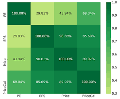
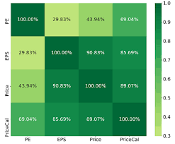

In this project, we applied Markowitz's Modern Portfolio Theory using Python to construct an optimal portfolio by minimizing risk (variance) while maximizing returns. The output was an efficient frontier curve, along with the optimal portfolio's weights, expected return, and risk level, providing a data-driven strategy for asset allocation.
 

In this project, we developed the StockReturnMatrix in Python to analyze daily stock returns and generate a correlation matrix, allowing us to understand the relationships between different stocks over time. The output included a comprehensive visual representation of stock correlations, enabling better decision-making for portfolio diversification and risk management.
In this project, we utilized Monte Carlo simulation in Python to predict the future stock price of Apple Inc. (AAPL) by modeling potential price paths based on historical volatility and expected returns. The output consisted of a range of predicted prices, accompanied by statistical metrics such as the mean, median, and confidence intervals, providing insights into possible future performance for informed investment decisions.

In this project, we calculated the expected return of a portfolio using the Capital Asset Pricing Model (CAPM) in Python, leveraging historical data to assess the risk and expected market returns. The output provided the expected return based on the portfolio's beta, the risk-free rate, and the expected market return, facilitating a deeper understanding of the portfolio's performance relative to market movements.

In this project, we conducted sentiment analysis using Python to evaluate public sentiment around specific financial assets by processing and analyzing social media posts and news articles. The output included sentiment scores and visualizations that highlighted trends in positive, negative, or neutral sentiments, enabling better insights into market sentiment and potential impacts on asset prices.
In this project, we utilized machine learning and deep learning techniques, specifically Long Short-Term Memory (LSTM) networks in Python, to predict stock market trends based on historical price data. The output consisted of accurate price predictions and performance metrics that demonstrated the model's effectiveness in capturing temporal dependencies and patterns within the stock market, aiding in informed investment decisions.
In this project, we utilized machine learning and deep learning techniques, specifically Long Short-Term Memory (LSTM) networks in Python, to predict stock market trends based on historical price data. The output consisted of accurate price predictions and performance metrics that demonstrated the model's effectiveness in capturing temporal dependencies and patterns within the stock market, aiding in informed investment decisions.